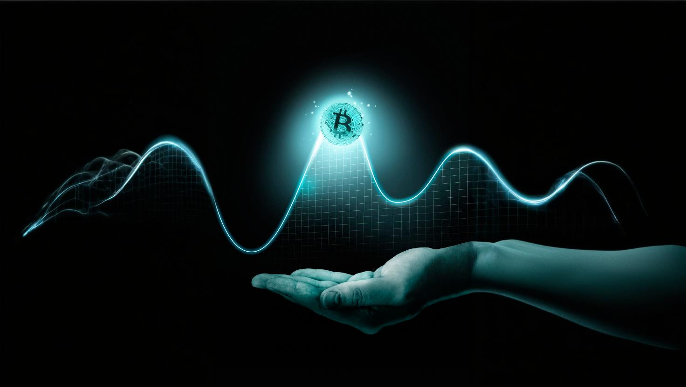

PROGETTAZIONE E REALIZZAZIONE DI UN WEBSITE SU CRIPTOVALUTE
← Impatti Economici e Sociali
Le criptovalute hanno impattato significativamente sul panorama economico, soprattutto nelle economie emergenti favorendone lo sviluppo e aprendole a nuove opportunità di business e investimenti. Le suddette consentono a piccole imprese e comunità, che frequentemente vengono escluse dai sistemi bancari tradizionali, di effettuare transazioni rapide e sicure, contribuendo allo sviluppo economico. L’espansione del settore ha anche contribuito a generare nuove figure professionali nel campo della sicurezza informatica, della consulenza finanziaria e dello sviluppo delle blockchain.
Le criptovalute, oltre che benefici, presentano anche numerosi rischi, un esempio è dato dalla loro elevata volatilità che rende difficile per le imprese pianificare le entrate. Per quanto riguarda la regolamentazione, pur avendo fatto passi avanti con il regolamento UE 2023/1114, questa è ancora in fase di sviluppo. Ulteriore problematica è relativa alle conseguenze sull’impatto ambientale, dovuto al consumo energetico elevato del mining, che frequentemente si basa su fonti fossili e che comporta emissioni elevate.
Per un maggiore approfondimento consultare:
| Opportunità e Impatto Economico | Rischi e Impatto Ambientale |

Fonte: Freepik. link:freepik.com
Fonte background:Freepik. link:freepik.com